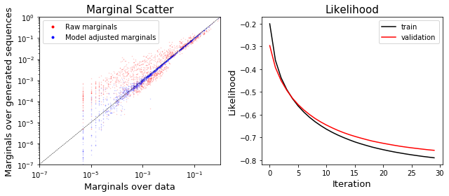
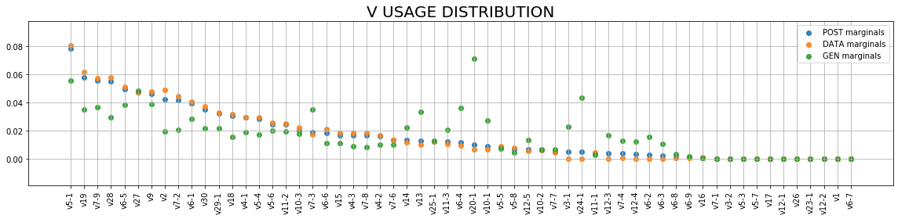
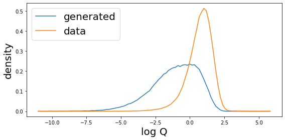
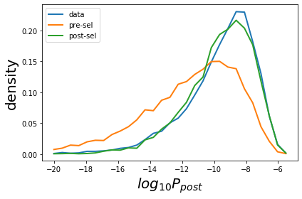
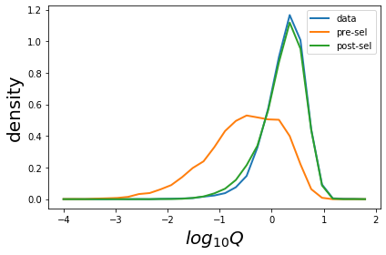

Tutorial¶
[1]:
import os
import sonia
from sonia.sonia_leftpos_rightpos import SoniaLeftposRightpos
from sonia.plotting import Plotter
from sonia.evaluate_model import EvaluateModel
from sonia.sequence_generation import SequenceGeneration
import numpy as np
import pandas as pd
load lists of sequences with gene specification¶
[2]:
# this assume data sequences are in semi-colon separated text file, with gene specification
data_seqs = list(pd.read_csv('data_seqs.csv.gz').values.astype(np.str))
data_seqs[:3]
[2]:
[array(['CASSKQGASEAFF', 'TRBV7-8', 'TRBJ1-1'], dtype='<U26'),
array(['CASSPPPNYGYTF', 'TRBV6-1', 'TRBJ1-2'], dtype='<U26'),
array(['CASSTDTTEAFF', 'TRBV6-5', 'TRBJ1-1'], dtype='<U26')]
define and infer model¶
[3]:
qm = SoniaLeftposRightpos(data_seqs=data_seqs,chain_type='humanTRB')
1%| | 1449/200000 [00:00<00:13, 14488.42it/s]
Encode data.
100%|██████████| 200000/200000 [00:14<00:00, 13918.58it/s]
[4]:
# add generated sequences (you can add them from file too, more is better.)
qm.add_generated_seqs(int(2e5))
1%| | 1824/200000 [00:00<00:21, 9184.30it/s]
Generate sequences.
100%|██████████| 200000/200000 [00:22<00:00, 8876.69it/s]
1%|▏ | 2944/200000 [00:00<00:13, 14349.60it/s]
Encode gen.
100%|██████████| 200000/200000 [00:13<00:00, 14425.46it/s]
[5]:
#define and train model
qm.infer_selection(epochs=30)
do some plotting¶
[6]:
plot_sonia=Plotter(qm)
plot_sonia.plot_model_learning()

[7]:
plot_sonia.plot_vjl()


[8]:
plot_sonia.plot_logQ()

generate sequences¶
[9]:
gn=SequenceGeneration(qm)
[10]:
pre_seqs=gn.generate_sequences_pre(int(1e4))
pre_seqs[:3]
[10]:
[['CASTGLDTEAFF', 'TRBV9', 'TRBJ1-1', 'TGTGCCAGCACAGGGCTTGACACTGAAGCTTTCTTT'],
['CASSALPGQNLNTEAFF',
'TRBV5-4',
'TRBJ1-1',
'TGTGCCAGCAGCGCCCTTCCCGGGCAAAATTTGAACACTGAAGCTTTCTTT'],
['CASSFLKEGALYGYTF',
'TRBV11-3',
'TRBJ1-2',
'TGTGCCAGCAGCTTTCTCAAAGAGGGGGCCCTCTATGGCTACACCTTC']]
[11]:
post_seqs=gn.generate_sequences_post(int(1e4))
post_seqs[:3]
[11]:
array([['CAIVMVARIDTQYF', 'TRBV9', 'TRBJ2-3',
'TGTGCCATTGTGATGGTAGCGAGGATAGATACGCAGTATTTT'],
['CASSPSSSLTNYGYTF', 'TRBV4-2', 'TRBJ1-2',
'TGTGCCAGCAGCCCCAGTTCGAGCCTCACTAACTATGGCTACACCTTC'],
['CASSELLVWDRVGNEQFF', 'TRBV2', 'TRBJ2-1',
'TGTGCCAGCAGTGAACTACTCGTCTGGGACAGGGTTGGCAATGAGCAGTTCTTC']],
dtype='<U96')
evaluate sequences¶
[12]:
ev=EvaluateModel(qm)
[13]:
Q_data,pgen_data,ppost_data=ev.evaluate_seqs(qm.data_seqs[:int(1e4)])
Q_gen,pgen_gen,ppost_gen=ev.evaluate_seqs(pre_seqs)
Q_model,pgen_model,ppost_model=ev.evaluate_seqs(post_seqs)
print(Q_model[:3]),
print(pgen_model[:3])
print(ppost_model[:3])
[0.77306277 3.2957966 0.80261236]
[3.34611302e-16 2.71243768e-12 1.90287780e-14]
[2.58675539e-16 8.93964296e-12 1.52727325e-14]
[14]:
plot_sonia.plot_prob(data=pgen_data,gen=pgen_gen,model=pgen_model,ptype='P_{pre}')

[15]:
plot_sonia.plot_prob(ppost_data,ppost_gen,ppost_model,ptype='P_{post}')

[16]:
plot_sonia.plot_prob(Q_data,Q_gen,Q_model,ptype='Q',bin_min=-4,bin_max=2)

some utils from OLGA¶
[17]:
# evaluation and selection models import olga classes, that can be used for additional analyses.
[18]:
gn.seq_gen_model.gen_rnd_prod_CDR3()
[18]:
('TGTGCCAGCAGCTTATTGAGTACGGGACAGGGGCAAAGAGCTTTCTTT', 'CASSLLSTGQGQRAFF', 69, 0)
[19]:
gn.genomic_data.genJ[1]
[19]:
['TRBJ1-2*01',
'CTAACTATGGCTACACCTTC',
'CTAACTATGGCTACACCTTCGGTTCGGGGACCAGGTTAACCGTTGTAG']
[20]:
ev.pgen_model.PinsDJ
[20]:
array([6.17437e-02, 3.61889e-02, 9.09608e-02, 1.05828e-01, 1.37586e-01,
1.14643e-01, 9.60481e-02, 8.14864e-02, 6.38634e-02, 4.92164e-02,
3.93751e-02, 2.90524e-02, 2.30059e-02, 1.64381e-02, 1.45157e-02,
1.13759e-02, 5.79127e-03, 5.97164e-03, 3.92779e-03, 2.96191e-03,
2.04381e-03, 2.48417e-03, 9.09996e-04, 1.35102e-03, 2.44798e-04,
4.52171e-04, 9.17052e-04, 6.28282e-04, 0.00000e+00, 1.41295e-05,
9.74155e-04, 0.00000e+00, 0.00000e+00, 0.00000e+00, 0.00000e+00])
load default sonia models¶
[21]:
# load default model (human TRA)
model_dir=os.path.join(os.path.dirname(sonia.sonia_leftpos_rightpos.__file__),'default_models','human_T_alpha')
qm=SoniaLeftposRightpos(load_dir=model_dir,chain_type='human_T_alpha')
Cannot find data_seqs.tsv -- no data seqs loaded.
Cannot find gen_seqs.tsv -- no generated seqs loaded.
[22]:
sq=SequenceGeneration(sonia_model=qm)
# generate seqs pre
seqs=sq.generate_sequences_pre(10)
# generate seqs post
seqs = sq.generate_sequences_post(10)
print(seqs)
[['CALSRVTGGGNKLTF' 'TRAV19' 'TRAJ10'
'TGTGCTCTGTCCAGGGTCACGGGAGGAGGAAACAAACTCACCTTT']
['CALSDLRSDGQKLLF' 'TRAV9-2' 'TRAJ16'
'TGTGCTCTGAGTGATCTACGGTCAGATGGCCAGAAGCTGCTCTTT']
['CAAKTGTASKLTF' 'TRAV13-1' 'TRAJ44'
'TGTGCAGCAAAAACCGGCACTGCCAGTAAACTCACCTTT']
['CAMREVDTVSGGYNKLIF' 'TRAV14/DV4' 'TRAJ4'
'TGTGCAATGAGAGAGGTAGATACGGTTTCTGGTGGCTACAATAAGCTGATTTTT']
['CAAIPNNNARLMF' 'TRAV23/DV6' 'TRAJ31'
'TGTGCAGCAATCCCGAATAACAATGCCAGACTCATGTTT']
['CALEESSASKIIF' 'TRAV6' 'TRAJ3'
'TGTGCTCTAGAAGAGAGCAGTGCTTCCAAGATAATCTTT']
['CAVRDPNQGGKLIF' 'TRAV1-1' 'TRAJ23'
'TGCGCTGTGAGAGATCCGAACCAGGGAGGAAAGCTTATCTTC']
['CAVRVNNNARLMF' 'TRAV1-1' 'TRAJ31'
'TGCGCTGTGAGAGTGAATAACAATGCCAGACTCATGTTT']
['CAVFGNAGGTSYGKLTF' 'TRAV36/DV7' 'TRAJ52'
'TGTGCTGTGTTTGGTAATGCTGGTGGTACTAGCTATGGAAAGCTGACATTT']
['CAACSQGGSEKLVF' 'TRAV13-1' 'TRAJ57'
'TGTGCAGCATGCTCTCAGGGCGGATCTGAAAAGCTGGTCTTT']]